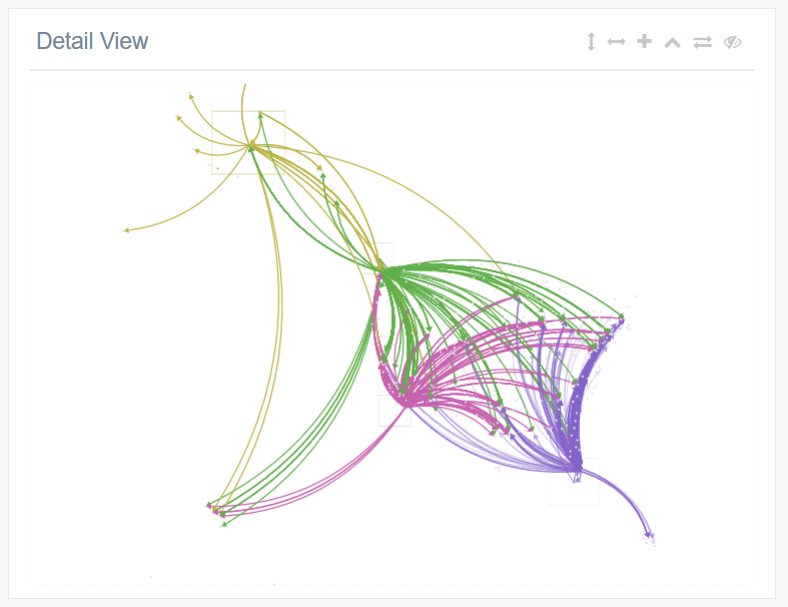

<link rel="stylesheet" href="docs/doc_style.css">
<header class="header">
  <div class="container">
    <h1 class="site-title">jDOSA</h1>
    <span class="site-tagline"><b>D</b>etail to <b>O</b>verview via <b>S</b>elections and <b>A</b>ggregations</span>
  </div>
</header>
<nav class="main-nav">
  <div class="container">
    <ul>
      <li class="mobile-button"><a href="#">Menu</a></li>
      <li><a href="jdosa.html">Implementation</a></li>
      <li><a href="out/Controller.html">Docs</a></li>
      <li><a href="https://github.com/freecraver/MiDOSA">Code</a></li>
      <li><a href="out/InfoVis2014.pdf">Paper</a></li>
    </ul>
  </div>
</nav>

<section class="content">
  <article class="post">
    <div class="container">
      <h2>Two Views</h2>
      <div class="columns">
        <div class="item">
          <h4 class="item-title">Detail View</h4>
          <p>The detail view offers users the ability to jump into the data. Painful work to connect <a href="http://sigmajs.org/">Sigma.js</a>
          and <a href="http://fabricjs.com/">Fabric.js</a> brought a fancy solution that is useable on PCs and tablets.<br/>
          With the help of selection-rectangles different groups and their interconnections can be explored. An additional "Photoshopish" panel
            can be used to change order and visibility of different selections, enabling the user to further dive into the world of data.
          </p>
          
        </div>
        <div class="item">
          <h4 class="item-title">High-level view</h4>
          <p>The detail view offers users the ability to jump into the data. Painful work to connect <a href="http://sigmajs.org/">Sigma.js</a>
            and <a href="http://fabricjs.com/">Fabric.js</a> brought a fancy solution that is useable on PCs and tablets.<br/>
            With the help of selection-rectangles different groups and their interconnections can be explored.
          </p>
        </div>
      </div>
    </div>
  </article>

  <article class="post">
    <div class="container">

      <h3>Bonus information</h3>

      <div class="columns thirds">
        <div class="item"> <h4 class="item-title">The paper</h4>
          <p>Van den Elzen et al. try to revolutionize the exploration of multivariate
            network data with their idea of Exploration From Detail to Overview via
            Selections and Aggregations or short DOSA. Visit his <a href="http://www.win.tue.nl/~selzen/">page</a>
          for further inspiration.</p>
        </div>

        <div class="item">
          <h4 class="item-title">The controller</h4>
          <p> The implementation is all about coordination. Every little change has to be passed to all components.
          We implemented a <a href="out/Controller.html">controller</a> that is aware of everything that happens.</p>
        </div>

        <div class="item">
          <h4 class="item-title">Open Source</h4>
          <p> OF COURSE - See <a href="https://github.com/freecraver/MiDOSA">here.</a> Smart people will notice that it says MiDOSA. We decided to change that to
            jDOSA. Nothing more to explain.</p>
        </div>
      </div>
    </div>
  </article>
</section>

<footer class="footer">
  <div class="container">
    <p>Implementation made with love by Wilma Weixelbaum & Martin Freisehner. Template made with love by <a href="http://cssgirl.com">Lindsey Di Napoli</a></p>
  </div>
</footer>

<script src = "docs/doc_js.js"></script>